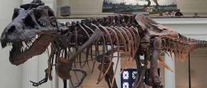
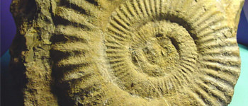

The Cretaceous Period!
A time of Dinosaurs long since past. The days when giant reptiles walked the earth, living, breathing. The Cretaceous Period was over 145–66 million years ago and ended with a massive extinction.
A time of Dinosaurs long since past. The days when giant reptiles walked the earth, living, breathing. The Cretaceous Period was over 145–66 million years ago and ended with a massive extinction.
 Tyrannosaurus (meaning "tyrant lizard") is a theropod dinosaur. The species Tyrannosaurus rex (rex meaning "king" in Latin), commonly abbreviated to T. rex, is a fixture in popular culture.
 Ammonites are an extinct group of marine invertebrate animals in the subclass Ammonoidea of the class Cephalopoda. These molluscs are more closely related to living coleoids (i.e. octopuses, squid, and cuttlefish) than they are to shelled nautiloids such as the living Nautilus species. The earliest ammonites appear during the Devonian, and the last species died out during the Cretaceous–Paleogene extinction event .